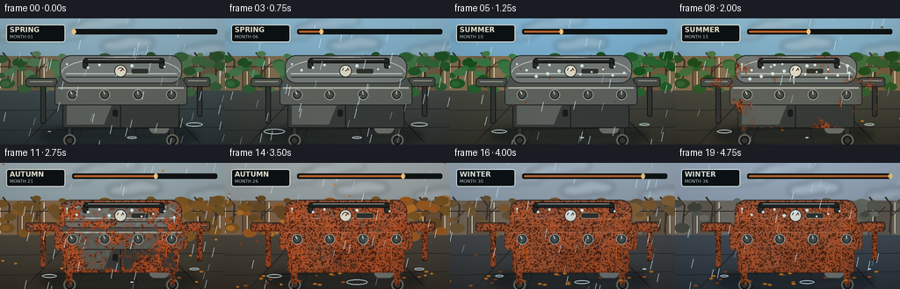
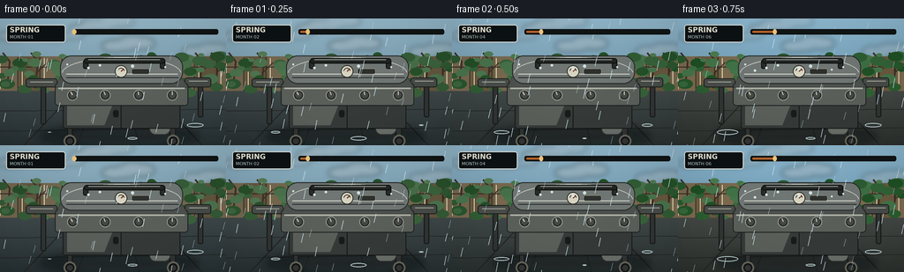

CODING AGENTS AS PIXEL WORLD MODELS
traex/GPT-5.6-Sol · material_0047
点击播放 · 原生 RGB 像素
逐轮保存的候选
回放视频、检查图与代码变化。
每份候选均可单独播放。实际图片检查记录在下方工具轨迹中。
候选 01播放与检查图
点击播放 · 原生 RGB 像素


展开代码变化
--- 上一保存版本
+++ 本次保存版本
@@ -0,0 +1,308 @@
+from pathlib import Path
+import math
+import numpy as np
+import cv2
+from PIL import Image, ImageDraw, ImageFont, ImageFilter
+import artifact_io
+
+# Deterministic procedural RGB video: no inputs or external assets.
+ROOT = Path(__file__).resolve().parent
+W, H, N, FPS = 256, 144, 20, 4.0
+S = 3
+w, h = W*S, H*S
+rng = np.random.default_rng(4701)
+
+FONT = "/usr/share/fonts/truetype/dejavu/DejaVuSans.ttf"
+FONT_B = "/usr/share/fonts/truetype/dejavu/DejaVuSans-Bold.ttf"
+
+def font(size, bold=False):
+ return ImageFont.truetype(FONT_B if bold else FONT, size*S)
+
+def sc_box(box): return tuple(int(round(v*S)) for v in box)
+def sc_pts(pts): return [(int(round(x*S)), int(round(y*S))) for x,y in pts]
+def lerp(a,b,t): return tuple(int(round(a[i]*(1-t)+b[i]*t)) for i in range(3))
+def smoothstep(x):
+ x=np.clip(x,0,1); return x*x*(3-2*x)
+
+def season_state(t):
+ # Four clear seasonal chapters, gently blended at their boundaries.
+ keys = [
+ ((114,149,166),(65,104,67),(104,91,67),(59,69,71)), # spring
+ ((101,155,187),(45,106,54),(122,100,69),(69,70,60)), # summer
+ ((128,137,138),(123,78,35),(113,84,59),(71,65,55)), # autumn
+ ((128,139,148),(91,92,81),(99,91,80),(62,69,75)), # winter
+ ]
+ q=t*3
+ k=min(2,int(q)); f=smoothstep(q-k)
+ return tuple(lerp(keys[k][i],keys[k+1][i],f) for i in range(4))
+
+# Persistent textures make corrosion grow rather than flicker.
+small = rng.random((54,96)).astype(np.float32)
+coarse = cv2.resize(small,(w,h),interpolation=cv2.INTER_CUBIC)
+fine = cv2.GaussianBlur(rng.random((h,w)).astype(np.float32),(0,0),2.1*S)
+veryfine = cv2.GaussianBlur(rng.random((h,w)).astype(np.float32),(0,0),0.45*S)
+field = .50*coarse + .31*fine + .19*veryfine
+field = cv2.GaussianBlur(field,(0,0),0.8*S)
+# Irregular corrosion initiation sites, especially at joints and beneath handle.
+yy,xx=np.mgrid[0:h,0:w]; X=xx/S; Y=yy/S
+for cx,cy,sx,sy,amp in [
+ (79,57,8,5,.42),(114,70,13,4,.35),(173,51,11,7,.38),(197,71,7,5,.36),
+ (74,91,8,12,.34),(131,87,16,5,.27),(189,93,9,9,.36),(86,112,8,11,.33),
+ (169,116,12,8,.37),(48,74,7,4,.32),(220,75,6,4,.30)]:
+ field += amp*np.exp(-(((X-cx)/sx)**2+((Y-cy)/sy)**2)/2)
+field=(field-field.min())/(field.max()-field.min())
+
+# Fixed garden geometry for temporal coherence.
+bush_pts=[]
+for i in range(92):
+ x=float(rng.uniform(-5,261)); y=float(rng.uniform(40,84)); r=float(rng.uniform(3,9))
+ bush_pts.append((x,y,r,float(rng.random())))
+clouds=[(float(rng.uniform(-40,250)),float(rng.uniform(4,38)),float(rng.uniform(22,54)),float(rng.uniform(5,13)),float(rng.random())) for _ in range(7)]
+rain_data=[(float(rng.uniform(-20,280)),float(rng.uniform(-80,145)),float(rng.uniform(24,56)),float(rng.uniform(.5,1))) for _ in range(95)]
+leaf_data=[(float(rng.uniform(-15,260)),float(rng.uniform(-100,145)),float(rng.uniform(10,35)),float(rng.uniform(0,6.28)),int(rng.integers(0,3))) for _ in range(30)]
+
+
+def rounded(draw,box,r,fill,outline=None,width=1):
+ draw.rounded_rectangle(sc_box(box),radius=int(r*S),fill=fill,outline=outline,width=max(1,int(width*S)))
+
+def make_surface_mask():
+ m=Image.new('L',(w,h),0); d=ImageDraw.Draw(m)
+ rounded(d,(68,43,207,79),13,255)
+ d.polygon(sc_pts([(68,67),(207,67),(213,78),(63,78)]),fill=255)
+ rounded(d,(62,74,213,99),4,255)
+ rounded(d,(71,92,204,125),3,255)
+ rounded(d,(30,69,65,78),3,255); rounded(d,(210,68,238,78),3,255)
+ # legs / supports
+ for box in [(75,117,82,139),(192,116,199,139),(46,75,52,119),(224,76,230,111)]: rounded(d,box,2,255)
+ return np.asarray(m,dtype=np.float32)/255
+SURFACE = make_surface_mask()
+# Edges and undersides corrode first.
+dist=cv2.distanceTransform((SURFACE*255).astype(np.uint8),cv2.DIST_L2,3)/S
+edge=np.clip(1-dist/9,0,1)
+sus=np.clip(.73*field+.27*edge,0,1)
+
+
+def draw_clouds(im,t,sky):
+ lay=Image.new('RGBA',(w,h),(0,0,0,0)); d=ImageDraw.Draw(lay)
+ for x,y,cw,ch,v in clouds:
+ px=((x + t*(8+6*v)+45)%330)-50
+ c=lerp((210,221,225),(162,173,178),.45+0.35*math.sin(t*2.8+v))
+ a=55+int(48*v)
+ for j in range(4):
+ ox=(j-1.5)*cw*.22; oy=math.sin(j*1.7+v)*ch*.25
+ d.ellipse(sc_box((px+ox-cw*.32,y+oy-ch*.55,px+ox+cw*.32,y+oy+ch*.55)),fill=(*c,a))
+ lay=lay.filter(ImageFilter.GaussianBlur(3*S))
+ im.alpha_composite(lay)
+
+
+def background(t):
+ sky,bush,fence,ground=season_state(t)
+ arr=np.zeros((h,w,4),np.uint8); arr[:,:,3]=255
+ horizon=int(73*S)
+ for y in range(horizon):
+ u=y/max(1,horizon-1); arr[y,:,:3]=lerp(tuple(min(255,c+38) for c in sky),sky,u)
+ for y in range(horizon,h):
+ u=(y-horizon)/max(1,h-horizon-1); arr[y,:,:3]=lerp(tuple(min(255,c+7) for c in ground),tuple(max(0,c-19) for c in ground),u)
+ im=Image.fromarray(arr,'RGBA'); draw_clouds(im,t,sky)
+ d=ImageDraw.Draw(im,'RGBA')
+ # Distant wooden fence, darkened by damp weather.
+ d.rectangle(sc_box((0,43,256,82)),fill=(*fence,255))
+ for x in range(-2,260,25):
+ shade=12 if ((x//25)&1) else -5
+ fc=tuple(np.clip(np.array(fence)+shade,0,255).astype(int))
+ d.rectangle(sc_box((x,43,x+23,82)),fill=(*fc,255))
+ d.line(sc_pts([(x+22,44),(x+22,82)]),fill=(49,46,40,75),width=S)
+ d.line(sc_pts([(x+2,45),(x+2,80)]),fill=(235,222,187,35),width=S)
+ d.line(sc_pts([(0,55),(256,55)]),fill=(49,43,36,85),width=S)
+ # Bare branch structure remains visible as foliage thins.
+ for bx in [8,40,226,244]:
+ d.line(sc_pts([(bx,79),(bx+3,49),(bx-5,39)]),fill=(62,50,39,150),width=2*S)
+ d.line(sc_pts([(bx+2,61),(bx+13,50)]),fill=(62,50,39,130),width=S)
+ # Foliage changes color and becomes sparse in winter.
+ winter=smoothstep((t-.70)/.25); autumn=smoothstep((t-.49)/.23)*(1-winter)
+ count=int(92*(1-.62*winter))
+ for x,y,r,v in bush_pts[:count]:
+ if autumn>0.05:
+ palettes=[(119,83,34),(153,88,31),(178,111,38),(100,72,37)]
+ ac=palettes[int(v*len(palettes))%len(palettes)]
+ col=lerp(bush,ac,autumn)
+ else: col=lerp(tuple(max(0,c-25) for c in bush),tuple(min(255,c+21) for c in bush),v)
+ d.ellipse(sc_box((x-r,y-r*.6,x+r,y+r*.65)),fill=(*col,225))
+ # Patio seams and wet perspective.
+ d.line(sc_pts([(0,105),(256,103)]),fill=(34,37,37,75),width=S)
+ d.line(sc_pts([(0,128),(256,124)]),fill=(35,36,36,88),width=S)
+ for x in [27,87,158,229]:
+ d.line(sc_pts([(128+(x-128)*.42,82),(x,144)]),fill=(38,38,37,88),width=S)
+ # Puddle/reflection directly below grill.
+ pd=Image.new('RGBA',(w,h),(0,0,0,0)); p=ImageDraw.Draw(pd)
+ p.ellipse(sc_box((48,124,225,145)),fill=(34,51,57,72))
+ p.ellipse(sc_box((80,128,202,140)),fill=(152,164,160,18))
+ pd=pd.filter(ImageFilter.GaussianBlur(3*S)); im.alpha_composite(pd)
+ return im
+
+
+def draw_grill(im,t):
+ d=ImageDraw.Draw(im,'RGBA')
+ # Contact shadow
+ sh=Image.new('RGBA',(w,h),(0,0,0,0)); sd=ImageDraw.Draw(sh)
+ sd.ellipse(sc_box((42,122,225,143)),fill=(10,13,14,120)); sh=sh.filter(ImageFilter.GaussianBlur(5*S)); im.alpha_composite(sh)
+ d=ImageDraw.Draw(im,'RGBA')
+ # rear structure and legs
+ for box in [(76,111,82,140),(192,111,199,140),(46,75,52,120),(224,75,230,112)]:
+ rounded(d,box,2,(49,53,52,255),(21,23,23,255),1)
+ # wheels
+ for cx in [79,196]:
+ d.ellipse(sc_box((cx-7,132,cx+7,146)),fill=(20,23,23,255),outline=(104,104,94,255),width=2*S)
+ d.ellipse(sc_box((cx-3.2,136,cx+3.2,142.4)),fill=(52,55,53,255))
+ # propane tank, iconic silhouette under right bay
+ rounded(d,(169,101,193,132),7,(107,112,107,255),(48,50,48,255),1)
+ d.rectangle(sc_box((174,98,188,105)),fill=(69,73,69,255)); d.arc(sc_box((175,94,188,105)),180,360,fill=(174,179,168,255),width=S)
+ # cabinet
+ rounded(d,(71,91,204,125),3,(54,59,57,255),(24,26,25,255),1)
+ # subtle cabinet sheen
+ d.polygon(sc_pts([(76,96),(128,96),(118,121),(76,121)]),fill=(91,96,91,32))
+ d.line(sc_pts([(137,94),(137,124)]),fill=(22,24,23,210),width=S)
+ rounded(d,(128,104,134,112),2,(25,28,27,255))
+ # side shelves
+ rounded(d,(29,68,65,78),3,(74,78,74,255),(29,31,30,255),1)
+ d.line(sc_pts([(34,72),(60,72)]),fill=(166,169,157,80),width=S)
+ rounded(d,(209,67,239,78),3,(72,76,72,255),(29,31,30,255),1)
+ d.line(sc_pts([(214,71),(235,71)]),fill=(169,171,158,75),width=S)
+ # control console
+ rounded(d,(62,73,213,99),4,(91,96,91,255),(31,33,32,255),1)
+ d.rectangle(sc_box((66,76,209,80)),fill=(172,176,165,80))
+ # Hood lower apron and curved lid
+ d.polygon(sc_pts([(68,66),(205,66),(213,78),(63,78)]),fill=(77,82,79,255),outline=(29,31,30,255))
+ rounded(d,(68,42,207,74),13,(112,119,116,255),(35,38,37,255),1)
+ # brushed-metal bands
+ d.arc(sc_box((70,44,205,80)),182,357,fill=(196,202,192,80),width=S)
+ d.line(sc_pts([(75,63),(201,63)]),fill=(212,215,204,35),width=S)
+ d.line(sc_pts([(75,67),(202,67)]),fill=(39,43,42,90),width=S)
+
+ # Apply persistent, progressively growing corrosion to every exposed metal surface.
+ arr=np.asarray(im.convert('RGB')).astype(np.float32)
+ progress=0.025 + .94*smoothstep(t) # old by the final winter
+ onset=.80-.76*sus
+ alpha=np.clip((progress-onset)*6.7,0,1)*SURFACE
+ alpha=cv2.GaussianBlur(alpha,(0,0),.38*S)
+ texture=np.clip(.62+.58*field,0,1)
+ rust=np.empty_like(arr)
+ rust[:,:,0]=112+77*texture; rust[:,:,1]=42+39*texture; rust[:,:,2]=18+18*texture
+ a=(alpha*(.70+.22*field))[:,:,None]
+ arr=arr*(1-a)+rust*a
+ # dark, flaky perimeter and pits
+ dil=cv2.dilate((alpha>0.16).astype(np.uint8),np.ones((3*S,3*S),np.uint8)).astype(float)
+ core=cv2.erode((alpha>0.48).astype(np.uint8),np.ones((2*S+1,2*S+1),np.uint8)).astype(float)
+ ring=np.clip(dil-core,0,1)*SURFACE*(.15+.45*progress)
+ dark=np.array([65,35,23],np.float32)
+ arr=arr*(1-ring[:,:,None]*.32)+dark*ring[:,:,None]*.32
+ # pinhole pitting (persistent threshold)
+ pits=(veryfine>.535)&(alpha>.45)&(SURFACE>.5)
+ arr[pits]=arr[pits]*.45
+ im.paste(Image.fromarray(np.clip(arr,0,255).astype(np.uint8),'RGB').convert('RGBA'))
+ d=ImageDraw.Draw(im,'RGBA')
+
+ # Rust trails from rain run-off, lengthening throughout the timelapse.
+ if progress>.18:
+ trail_a=int(150*min(1,(progress-.18)/.55))
+ for x0,y0,L in [(80,57,17),(113,68,12),(174,55,19),(198,67,13),(86,95,22),(188,94,24)]:
+ length=L*min(1,max(0,(progress-.12)/.7))
+ d.line(sc_pts([(x0,y0),(x0+.8,y0+length)]),fill=(119,48,20,trail_a),width=S)
+ d.line(sc_pts([(x0+1,y0+2),(x0+1,y0+length*.75)]),fill=(207,92,28,trail_a//2),width=S)
+
+ # Crisp hardware over the weathered shell.
+ # Hood handle mounts and black grip
+ for x in [94,181]: rounded(d,(x,47,x+6,57),2,(42,44,42,255),(18,20,19,255),1)
+ rounded(d,(95,45,187,51),3,(34,37,36,255),(14,16,15,255),1)
+ d.line(sc_pts([(100,46.5),(181,46.5)]),fill=(154,158,150,65),width=S)
+ # Four control knobs
+ for i,cx in enumerate([82,119,157,195]):
+ d.ellipse(sc_box((cx-6,81,cx+6,93)),fill=(38,41,39,255),outline=(151,155,146,220),width=S)
+ d.ellipse(sc_box((cx-3.8,83,cx+3.8,90.6)),fill=(70,74,70,255))
+ ang=-2.1 + i*.18
+ d.line(sc_pts([(cx,86.8),(cx+4*math.cos(ang),86.8+4*math.sin(ang))]),fill=(219,215,193,225),width=S)
+ # Tiny thermometer gauge on hood
+ d.ellipse(sc_box((130,53,144,67)),fill=(215,212,193,225),outline=(43,44,40,255),width=S)
+ d.arc(sc_box((133,56,141,64)),190,350,fill=(54,57,54,255),width=S)
+ d.line(sc_pts([(137,60),(140,57)]),fill=(118,35,24,255),width=S)
+ # manufacturer-like badge (non-text emblem)
+ rounded(d,(149,57,169,63),2,(45,48,45,230),(190,183,157,170),.5)
+
+ # Summer condensation / winter wet beads, attached to surface.
+ humidity=.18 + .78*math.exp(-((t-.40)/.18)**2) + .25*max(0,(t-.78)/.22)
+ droplets=[(76+((i*37)%124),52+((i*19)%18),1+(i%3)*.35) for i in range(23)]
+ for i,(x0,y0,r) in enumerate(droplets):
+ if (i/23)<humidity:
+ d.ellipse(sc_box((x0-r,y0-r,x0+r,y0+r)),fill=(205,225,225,80),outline=(236,244,240,125),width=max(1,S//2))
+ if progress>.35 and i%5==0:
+ d.line(sc_pts([(x0,y0+r),(x0,y0+r+3+4*humidity)]),fill=(202,220,218,70),width=S)
+
+
+def weather_overlay(im,t,fi):
+ d=ImageDraw.Draw(im,'RGBA')
+ # Rain in spring, autumn storms, and wet winter; lighter during muggy summer.
+ intensity=.23 + .68*math.exp(-((t-.09)/.18)**2)+.48*math.exp(-((t-.64)/.12)**2)+.38*math.exp(-((t-.92)/.15)**2)
+ count=int(min(95,95*intensity))
+ for j,(x,y,speed,thick) in enumerate(rain_data[:count]):
+ py=((y + fi*speed*0.78)%225)-55
+ px=(x-fi*1.5)%280-12
+ length=5+6*thick
+ d.line(sc_pts([(px,py),(px-2.2,py+length)]),fill=(206,227,235,80+int(60*thick)),width=max(1,int(thick*S)))
+ # autumn leaves swirl across foreground and accumulate by the grill.
+ autumn=math.exp(-((t-.66)/.17)**2)
+ for j,(x,y,speed,phase,typ) in enumerate(leaf_data[:int(30*autumn)]):
+ py=((y+fi*speed*.38)%190)-30; px=(x+12*math.sin(fi*.32+phase))%275-10
+ col=[(177,91,29,220),(127,65,28,220),(200,128,37,220)][typ]
+ r=1.4+typ*.3
+ d.polygon(sc_pts([(px-r,py),(px,py-r*.6),(px+r,py),(px,py+r*.65)]),fill=col)
+ # progressive leaf accumulation on patio
+ accum=int(20*smoothstep((t-.52)/.30))
+ for j,(x,y,_,phase,typ) in enumerate(leaf_data[:accum]):
+ px=18+(x*1.31)%220; py=124+(j*7%17)
+ col=[(150,75,27,215),(108,59,31,220),(186,105,29,220)][typ]
+ d.ellipse(sc_box((px-2,py-1,px+2.5,py+1)),fill=col)
+ # Expanding puddle ripples mark accelerated rainfall/time.
+ for j in range(3):
+ phase=(fi*.33+j*.37)%1
+ cx=[56,150,221][j]; cy=[129,136,121][j]
+ rr=2+phase*10
+ d.ellipse(sc_box((cx-rr,cy-rr*.25,cx+rr,cy+rr*.25)),outline=(190,211,214,int(100*(1-phase))),width=S)
+
+
+def label(im,t,fi):
+ names=['SPRING','SUMMER','AUTUMN','WINTER']
+ idx=min(3,int(t*4))
+ d=ImageDraw.Draw(im,'RGBA')
+ # restrained documentary overlay, reinforces several-season timelapse.
+ d.rounded_rectangle(sc_box((7,7,74,27)),radius=3*S,fill=(12,18,20,137),outline=(232,238,232,38),width=S)
+ d.text((11*S,8*S),names[idx],font=font(8,True),fill=(244,242,225,238))
+ d.text((11*S,18*S),f"MONTH {1+int(t*35):02d}",font=font(5),fill=(203,216,214,225))
+ # time progression track
+ d.rounded_rectangle(sc_box((82,12,247,18)),radius=2*S,fill=(16,20,20,100))
+ d.rounded_rectangle(sc_box((84,14,84+161*t,16)),radius=S,fill=(192,103,43,210))
+ cx=84+161*t; d.ellipse(sc_box((cx-2.2,12,cx+2.2,18)),fill=(244,204,128,235))
+
+
+def render(fi):
+ t=fi/(N-1)
+ im=background(t)
+ draw_grill(im,t)
+ weather_overlay(im,t,fi)
+ label(im,t,fi)
+ # Seasonal cinematic grade and subtle vignette.
+ arr=np.asarray(im.convert('RGB')).astype(np.float32)
+ if t>.76: arr[:,:,2]*=1.05; arr[:,:,0]*=.96
+ elif .28<t<.53: arr[:,:,0]*=1.035; arr[:,:,1]*=1.02
+ cy,cx=np.mgrid[0:h,0:w]; vig=1-.13*np.clip(((cx-w/2)/(w*.68))**2+((cy-h/2)/(h*.72))**2,0,1)
+ arr*=vig[:,:,None]
+ out=Image.fromarray(np.clip(arr,0,255).astype(np.uint8)).resize((W,H),Image.Resampling.LANCZOS)
+ return np.asarray(out,dtype=np.uint8)
+
+
+def main():
+ frames=np.stack([render(i) for i in range(N)],axis=0)
+ artifact_io.save(frames,ROOT)
+ print('saved',frames.shape,frames.dtype)
+
+if __name__=='__main__':
+ main()
可观测工具轨迹
实际执行的命令与返回图片。
命令 1exit 0
/bin/bash -lc "cat prompt.txt && printf '\\n--- GENERATION_RULES ---\\n' && cat GENERATION_RULES.md"
命令 2exit 0
/bin/bash -lc "cat task_spec.json && printf '\\n--- FILES ---\\n' && find . -maxdepth 2 -type f -printf '%p\\n' | sort"
命令 3exit 0
/bin/bash -lc "which ffmpeg; which convert; which python3; python3 - <<'PY' for m in ['PIL','numpy','cv2','imageio','moviepy','cairo']: try: x=__import__(m); print(m,'OK',getattr(x,'__version__','')) except Exception as e: print(m,'NO',str(e)[:100]) PY"
命令 4exit 0
/bin/bash -lc 'cat artifact_io.py'
命令 5exit 0
/bin/bash -lc "cat > generate.py <<'PY'
from pathlib import Path
import math
import numpy as np
import cv2
from PIL import Image, ImageDraw, ImageFont, ImageFilter
import artifact_io
# Deterministic procedural RGB video: no inputs or external assets.
ROOT = Path(__file__).resolve().parent
W, H, N, FPS = 256, 144, 20, 4.0
S = 3
w, h = W*S, H*S
rng = np.random.default_rng(4701)
FONT = \"/usr/share/fonts/truetype/dejavu/DejaVuSans.ttf\"
FONT_B = \"/usr/share/fonts/truetype/dejavu/DejaVuSans-Bold.ttf\"
def font(size, bold=False):
return ImageFont.truetype(FONT_B if bold else FONT, size*S)
def sc_box(box): return tuple(int(round(v*S)) for v in box)
def sc_pts(pts): return [(int(round(x*S)), int(round(y*S))) for x,y in pts]
def lerp(a,b,t): return tuple(int(round(a[i]*(1-t)+b[i]*t)) for i in range(3))
def smoothstep(x):
x=np.clip(x,0,1); return x*x*(3-2*x)
def season_state(t):
# Four clear seasonal chapters, gently blended at their boundaries.
keys = [
((114,149,166),(65,104,67),(104,91,67),(59,69,71)), # spring
((101,155,187),(45,106,54),(122,100,69),(69,70,60)), # summer
((128,137,138),(123,78,35),(113,84,59),(71,65,55)), # autumn
((128,139,148),(91,92,81),(99,91,80),(62,69,75)), # winter
]
q=t*3
k=min(2,int(q)); f=smoothstep(q-k)
return tuple(lerp(keys[k][i],keys[k+1][i],f) for i in range(4))
# Persistent textures make corrosion grow rather than flicker.
small = rng.random((54,96)).astype(np.float32)
coarse = cv2.resize(small,(w,h),interpolation=cv2.INTER_CUBIC)
fine = cv2.GaussianBlur(rng.random((h,w)).astype(np.float32),(0,0),2.1*S)
veryfine = cv2.GaussianBlur(rng.random((h,w)).astype(np.float32),(0,0),0.45*S)
field = .50*coarse + .31*fine + .19*veryfine
field = cv2.GaussianBlur(field,(0,0),0.8*S)
# Irregular corrosion initiation sites, especially at joints and beneath handle.
yy,xx=np.mgrid[0:h,0:w]; X=xx/S; Y=yy/S
for cx,cy,sx,sy,amp in [
(79,57,8,5,.42),(114,70,13,4,.35),(173,51,11,7,.38),(197,71,7,5,.36),
(74,91,8,12,.34),(131,87,16,5,.27),(189,93,9,9,.36),(86,112,8,11,.33),
(169,116,12,8,.37),(48,74,7,4,.32),(220,75,6,4,.30)]:
field += amp*np.exp(-(((X-cx)/sx)**2+((Y-cy)/sy)**2)/2)
field=(field-field.min())/(field.max()-field.min())
# Fixed garden geometry for temporal coherence.
bush_pts=[]
for i in range(92):
x=float(rng.uniform(-5,261)); y=float(rng.uniform(40,84)); r=float(rng.uniform(3,9))
bush_pts.append((x,y,r,float(rng.random())))
clouds=[(float(rng.uniform(-40,250)),float(rng.uniform(4,38)),float(rng.uniform(22,54)),float(rng.uniform(5,13)),float(rng.random())) for _ in range(7)]
rain_data=[(float(rng.uniform(-20,280)),float(rng.uniform(-80,145)),float(rng.uniform(24,56)),float(rng.uniform(.5,1))) for _ in range(95)]
leaf_data=[(float(rng.uniform(-15,260)),float(rng.uniform(-100,145)),float(rng.uniform(10,35)),float(rng.uniform(0,6.28)),int(rng.integers(0,3))) for _ in range(30)]
def rounded(draw,box,r,fill,outline=None,width=1):
draw.rounded_rectangle(sc_box(box),radius=int(r*S),fill=fill,outline=outline,width=max(1,int(width*S)))
def make_surface_mask():
m=Image.new('L',(w,h),0); d=ImageDraw.Draw(m)
rounded(d,(68,43,207,79),13,255)
d.polygon(sc_pts([(68,67),(207,67),(213,78),(63,78)]),fill=255)
rounded(d,(62,74,213,99),4,255)
rounded(d,(71,92,204,125),3,255)
rounded(d,(30,69,65,78),3,255); rounded(d,(210,68,238,78),3,255)
# legs / supports
for box in [(75,117,82,139),(192,116,199,139),(46,75,52,119),(224,76,230,111)]: rounded(d,box,2,255)
return np.asarray(m,dtype=np.float32)/255
SURFACE = make_surface_mask()
# Edges and undersides corrode first.
dist=cv2.distanceTransform((SURFACE*255).astype(np.uint8),cv2.DIST_L2,3)/S
edge=np.clip(1-dist/9,0,1)
sus=np.clip(.73*field+.27*edge,0,1)
def draw_clouds(im,t,sky):
lay=Image.new('RGBA',(w,h),(0,0,0,0)); d=ImageDraw.Draw(lay)
for x,y,cw,ch,v in clouds:
px=((x + t*(8+6*v)+45)%330)-50
c=lerp((210,221,225),(162,173,178),.45+0.35*math.sin(t*2.8+v))
a=55+int(48*v)
for j in range(4):
ox=(j-1.5)*cw*.22; oy=math.sin(j*1.7+v)*ch*.25
d.ellipse(sc_box((px+ox-cw*.32,y+oy-ch*.55,px+ox+cw*.32,y+oy+ch*.55)),fill=(*c,a))
lay=lay.filter(ImageFilter.GaussianBlur(3*S))
im.alpha_composite(lay)
def background(t):
sky,bush,fence,ground=season_state(t)
arr=np.zeros((h,w,4),np.uint8); arr[:,:,3]=255
horizon=int(73*S)
for y in range(horizon):
u=y/max(1,horizon-1); arr[y,:,:3]=lerp(tuple(min(255,c+38) for c in sky),sky,u)
for y in range(horizon,h):
u=(y-horizon)/max(1,h-horizon-1); arr[y,:,:3]=lerp(tuple(min(255,c+7) for c in ground),tuple(max(0,c-19) for c in ground),u)
im=Image.fromarray(arr,'RGBA'); draw_clouds(im,t,sky)
d=ImageDraw.Draw(im,'RGBA')
# Distant wooden fence, darkened by damp weather.
d.rectangle(sc_box((0,43,256,82)),fill=(*fence,255))
for x in range(-2,260,25):
shade=12 if ((x//25)&1) else -5
fc=tuple(np.clip(np.array(fence)+shade,0,255).astype(int))
d.rectangle(sc_box((x,43,x+23,82)),fill=(*fc,255))
d.line(sc_pts([(x+22,44),(x+22,82)]),fill=(49,46,40,75),width=S)
d.line(sc_pts([(x+2,45),(x+2,80)]),fill=(235,222,187,35),width=S)
d.line(sc_pts([(0,55),(256,55)]),fill=(49,43,36,85),width=S)
# Bare branch structure remains visible as foliage thins.
for bx in [8,40,226,244]:
d.line(sc_pts([(bx,79),(bx+3,49),(bx-5,39)]),fill=(62,50,39,150),width=2*S)
d.line(sc_pts([(bx+2,61),(bx+13,50)]),fill=(62,50,39,130),width=S)
# Foliage changes color and becomes sparse in winter.
winter=smoothstep((t-.70)/.25); autumn=smoothstep((t-.49)/.23)*(1-winter)
count=int(92*(1-.62*winter))
for x,y,r,v in bush_pts[:count]:
if autumn>0.05:
palettes=[(119,83,34),(153,88,31),(178,111,38),(100,72,37)]
ac=palettes[int(v*len(palettes))%len(palettes)]
col=lerp(bush,ac,autumn)
else: col=lerp(tuple(max(0,c-25) for c in bush),tuple(min(255,c+21) for c in bush),v)
d.ellipse(sc_box((x-r,y-r*.6,x+r,y+r*.65)),fill=(*col,225))
# Patio seams and wet perspective.
d.line(sc_pts([(0,105),(256,103)]),fill=(34,37,37,75),width=S)
d.line(sc_pts([(0,128),(256,124)]),fill=(35,36,36,88),width=S)
for x in [27,87,158,229]:
d.line(sc_pts([(128+(x-128)*.42,82),(x,144)]),fill=(38,38,37,88),width=S)
# Puddle/reflection directly below grill.
pd=Image.new('RGBA',(w,h),(0,0,0,0)); p=ImageDraw.Draw(pd)
p.ellipse(sc_box((48,124,225,145)),fill=(34,51,57,72))
p.ellipse(sc_box((80,128,202,140)),fill=(152,164,160,18))
pd=pd.filter(ImageFilter.GaussianBlur(3*S)); im.alpha_composite(pd)
return im
def draw_grill(im,t):
d=ImageDraw.Draw(im,'RGBA')
# Contact shadow
sh=Image.new('RGBA',(w,h),(0,0,0,0)); sd=ImageDraw.Draw(sh)
sd.ellipse(sc_box((42,122,225,143)),fill=(10,13,14,120)); sh=sh.filter(ImageFilter.GaussianBlur(5*S)); im.alpha_composite(sh)
d=ImageDraw.Draw(im,'RGBA')
# rear structure and legs
for box in [(76,111,82,140),(192,111,199,140),(46,75,52,120),(224,75,230,112)]:
rounded(d,box,2,(49,53,52,255),(21,23,23,255),1)
# wheels
for cx in [79,196]:
d.ellipse(sc_box((cx-7,132,cx+7,146)),fill=(20,23,23,255),outline=(104,104,94,255),width=2*S)
d.ellipse(sc_box((cx-3.2,136,cx+3.2,142.4)),fill=(52,55,53,255))
# propane tank, iconic silhouette under right bay
rounded(d,(169,101,193,132),7,(107,112,107,255),(48,50,48,255),1)
d.rectangle(sc_box((174,98,188,105)),fill=(69,73,69,255)); d.arc(sc_box((175,94,188,105)),180,360,fill=(174,179,168,255),width=S)
# cabinet
rounded(d,(71,91,204,125),3,(54,59,57,255),(24,26,25,255),1)
# subtle cabinet sheen
d.polygon(sc_pts([(76,96),(128,96),(118,121),(76,121)]),fill=(91,96,91,32))
d.line(sc_pts([(137,94),(137,124)]),fill=(22,24,23,210),width=S)
rounded(d,(128,104,134,112),2,(25,28,27,255))
# side shelves
rounded(d,(29,68,65,78),3,(74,78,74,255),(29,31,30,255),1)
d.line(sc_pts([(34,72),(60,72)]),fill=(166,169,157,80),width=S)
rounded(d,(209,67,239,78),3,(72,76,72,255),(29,31,30,255),1)
d.line(sc_pts([(214,71),(235,71)]),fill=(169,171,158,75),width=S)
# control console
rounded(d,(62,73,213,99),4,(91,96,91,255),(31,33,32,255),1)
d.rectangle(sc_box((66,76,209,80)),fill=(172,176,165,80))
# Hood lower apron and curved lid
d.polygon(sc_pts([(68,66),(205,66),(213,78),(63,78)]),fill=(77,82,79,255),outline=(29,31,30,255))
rounded(d,(68,42,207,74),13,(112,119,116,255),(35,38,37,255),1)
# brushed-metal bands
d.arc(sc_box((70,44,205,80)),182,357,fill=(196,202,192,80),width=S)
d.line(sc_pts([(75,63),(201,63)]),fill=(212,215,204,35),width=S)
d.line(sc_pts([(75,67),(202,67)]),fill=(39,43,42,90),width=S)
# Apply persistent, progressively growing corrosion to every exposed metal surface.
arr=np.asarray(im.convert('RGB')).astype(np.float32)
progress=0.025 + .94*smoothstep(t) # old by the final winter
onset=.80-.76*sus
alpha=np.clip((progress-onset)*6.7,0,1)*SURFACE
alpha=cv2.GaussianBlur(alpha,(0,0),.38*S)
texture=np.clip(.62+.58*field,0,1)
rust=np.empty_like(arr)
rust[:,:,0]=112+77*texture; rust[:,:,1]=42+39*texture; rust[:,:,2]=18+18*texture
a=(alpha*(.70+.22*field))[:,:,None]
arr=arr*(1-a)+rust*a
# dark, flaky perimeter and pits
dil=cv2.dilate((alpha>0.16).astype(np.uint8),np.ones((3*S,3*S),np.uint8)).astype(float)
core=cv2.erode((alpha>0.48).astype(np.uint8),np.ones((2*S+1,2*S+1),np.uint8)).astype(float)
ring=np.clip(dil-core,0,1)*SURFACE*(.15+.45*progress)
dark=np.array([65,35,23],np.float32)
arr=arr*(1-ring[:,:,None]*.32)+dark*ring[:,:,None]*.32
# pinhole pitting (persistent threshold)
pits=(veryfine>.535)&(alpha>.45)&(SURFACE>.5)
arr[pits]=arr[pits]*.45
im.paste(Image.fromarray(np.clip(arr,0,255).astype(np.uint8),'RGB').convert('RGBA'))
d=ImageDraw.Draw(im,'RGBA')
# Rust trails from rain run-off, lengthening throughout the timelapse.
if progress>.18:
trail_a=int(150*min(1,(progress-.18)/.55))
for x0,y0,L in [(80,57,17),(113,68,12),(174,55,19),(198,67,13),(86,95,22),(188,94,24)]:
length=L*min(1,max(0,(progress-.12)/.7))
d.line(sc_pts([(x0,y0),(x0+.8,y0+length)]),fill=(119,48,20,trail_a),width=S)
d.line(sc_pts([(x0+1,y0+2),(x0+1,y0+length*.75)]),fill=(207,92,28,trail_a//2),width=S)
# Crisp hardware over the weathered shell.
# Hood handle mounts and black grip
for x in [94,181]: rounded(d,(x,47,x+6,57),2,(42,44,42,255),(18,20,19,255),1)
rounded(d,(95,45,187,51),3,(34,37,36,255),(14,16,15,255),1)
d.line(sc_pts([(100,46.5),(181,46.5)]),fill=(154,158,150,65),width=S)
# Four control knobs
for i,cx in enumerate([82,119,157,195]):
d.ellipse(sc_box((cx-6,81,cx+6,93)),fill=(38,41,39,255),outline=(151,155,146,220),width=S)
d.ellipse(sc_box((cx-3.8,83,cx+3.8,90.6)),fill=(70,74,70,255))
ang=-2.1 + i*.18
d.line(sc_pts([(cx,86.8),(cx+4*math.cos(ang),86.8+4*math.sin(ang))]),fill=(219,215,193,225),width=S)
# Tiny thermometer gauge on hood
d.ellipse(sc_box((130,53,144,67)),fill=(215,212,193,225),outline=(43,44,40,255),width=S)
d.arc(sc_box((133,56,141,64)),190,350,fill=(54,57,54,255),width=S)
d.line(sc_pts([(137,60),(140,57)]),fill=(118,35,24,255),width=S)
# manufacturer-like badge (non-text emblem)
rounded(d,(149,57,169,63),2,(45,48,45,230),(190,183,157,170),.5)
# Summer condensation / winter wet beads, attached to surface.
humidity=.18 + .78*math.exp(-((t-.40)/.18)**2) + .25*max(0,(t-.78)/.22)
droplets=[(76+((i*37)%124),52+((i*19)%18),1+(i%3)*.35) for i in range(23)]
for i,(x0,y0,r) in enumerate(droplets):
if (i/23)<humidity:
d.ellipse(sc_box((x0-r,y0-r,x0+r,y0+r)),fill=(205,225,225,80),outline=(236,244,240,125),width=max(1,S//2))
if progress>.35 and i%5==0:
d.line(sc_pts([(x0,y0+r),(x0,y0+r+3+4*humidity)]),fill=(202,220,218,70),width=S)
def weather_overlay(im,t,fi):
d=ImageDraw.Draw(im,'RGBA')
# Rain in spring, autumn storms, and wet winter; lighter during muggy summer.
intensity=.23 + .68*math.exp(-((t-.09)/.18)**2)+.48*math.exp(-((t-.64)/.12)**2)+.38*math.exp(-((t-.92)/.15)**2)
count=int(min(95,95*intensity))
for j,(x,y,speed,thick) in enumerate(rain_data[:count]):
py=((y + fi*speed*0.78)%225)-55
px=(x-fi*1.5)%280-12
length=5+6*thick
d.line(sc_pts([(px,py),(px-2.2,py+length)]),fill=(206,227,235,80+int(60*thick)),width=max(1,int(thick*S)))
# autumn leaves swirl across foreground and accumulate by the grill.
autumn=math.exp(-((t-.66)/.17)**2)
for j,(x,y,speed,phase,typ) in enumerate(leaf_data[:int(30*autumn)]):
py=((y+fi*speed*.38)%190)-30; px=(x+12*math.sin(fi*.32+phase))%275-10
col=[(177,91,29,220),(127,65,28,220),(200,128,37,220)][typ]
r=1.4+typ*.3
d.polygon(sc_pts([(px-r,py),(px,py-r*.6),(px+r,py),(px,py+r*.65)]),fill=col)
# progressive leaf accumulation on patio
accum=int(20*smoothstep((t-.52)/.30))
for j,(x,y,_,phase,typ) in enumerate(leaf_data[:accum]):
px=18+(x*1.31)%220; py=124+(j*7%17)
col=[(150,75,27,215),(108,59,31,220),(186,105,29,220)][typ]
d.ellipse(sc_box((px-2,py-1,px+2.5,py+1)),fill=col)
# Expanding puddle ripples mark accelerated rainfall/time.
for j in range(3):
phase=(fi*.33+j*.37)%1
cx=[56,150,221][j]; cy=[129,136,121][j]
rr=2+phase*10
d.ellipse(sc_box((cx-rr,cy-rr*.25,cx+rr,cy+rr*.25)),outline=(190,211,214,int(100*(1-phase))),width=S)
def label(im,t,fi):
names=['SPRING','SUMMER','AUTUMN','WINTER']
idx=min(3,int(t*4))
d=ImageDraw.Draw(im,'RGBA')
# restrained documentary overlay, reinforces several-season timelapse.
d.rounded_rectangle(sc_box((7,7,74,27)),radius=3*S,fill=(12,18,20,137),outline=(232,238,232,38),width=S)
d.text((11*S,8*S),names[idx],font=font(8,True),fill=(244,242,225,238))
d.text((11*S,18*S),f\"MONTH {1+int(t*35):02d}\",font=font(5),fill=(203,216,214,225))
# time progression track
d.rounded_rectangle(sc_box((82,12,247,18)),radius=2*S,fill=(16,20,20,100))
d.rounded_rectangle(sc_box((84,14,84+161*t,16)),radius=S,fill=(192,103,43,210))
cx=84+161*t; d.ellipse(sc_box((cx-2.2,12,cx+2.2,18)),fill=(244,204,128,235))
def render(fi):
t=fi/(N-1)
im=background(t)
draw_grill(im,t)
weather_overlay(im,t,fi)
label(im,t,fi)
# Seasonal cinematic grade and subtle vignette.
arr=np.asarray(im.convert('RGB')).astype(np.float32)
if t>.76: arr[:,:,2]*=1.05; arr[:,:,0]*=.96
elif .28<t<.53: arr[:,:,0]*=1.035; arr[:,:,1]*=1.02
cy,cx=np.mgrid[0:h,0:w]; vig=1-.13*np.clip(((cx-w/2)/(w*.68))**2+((cy-h/2)/(h*.72))**2,0,1)
arr*=vig[:,:,None]
out=Image.fromarray(np.clip(arr,0,255).astype(np.uint8)).resize((W,H),Image.Resampling.LANCZOS)
return np.asarray(out,dtype=np.uint8)
def main():
frames=np.stack([render(i) for i in range(N)],axis=0)
artifact_io.save(frames,ROOT)
print('saved',frames.shape,frames.dtype)
if __name__=='__main__':
main()
PY
python3 generate.py
ls -lh pixels.npz inspection.png transition_check.png index.html frames/00.png frames/19.png"命令 6exit 0
/bin/bash -lc "python3 - <<'PY'
import numpy as np, json
from PIL import Image
p=np.load('pixels.npz')['pixels']
s=json.load(open('task_spec.json'))
assert p.shape==(s['height'],s['width'],s['frames'])
fs=np.stack([np.array(Image.open(f'frames/{i:02d}.png').convert('RGB')) for i in range(20)])
assert fs.shape==(20,144,256,3) and fs.dtype==np.uint8
mad=np.abs(np.diff(fs.astype('i2'),axis=0)).mean((1,2,3))
print('pixels',p.shape,p.dtype,'frames',fs.shape,fs.dtype)
print('frame delta MAD min/mean/max',round(float(mad.min()),2),round(float(mad.mean()),2),round(float(mad.max()),2))
print('unique hashes',len({__import__('hashlib').sha256(x.tobytes()).hexdigest() for x in fs}))
print('RGB range',int(fs.min()),int(fs.max()))
PY"命令 7exit 0
/bin/bash -lc 'test -s generate.py && test -s pixels.npz && test -s index.html && test -s inspection.png && test "$(find frames -name '"'*.png' | wc -l)\" -eq 20 && echo 'artifact set complete' && git status --short 2>/dev/null || true"
视觉工具实际返回图片 1

保存候选 1 份；完成命令 7 次；可验证图片返回 1 张。原始 API 响应与完整日志保留在本地。